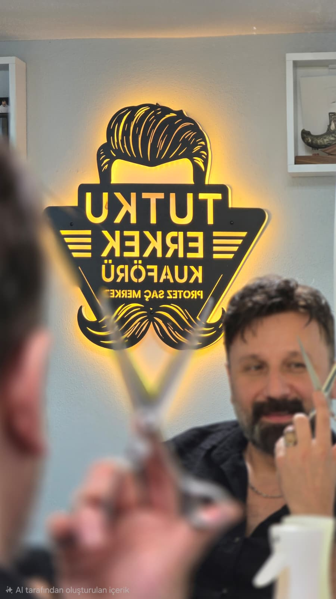
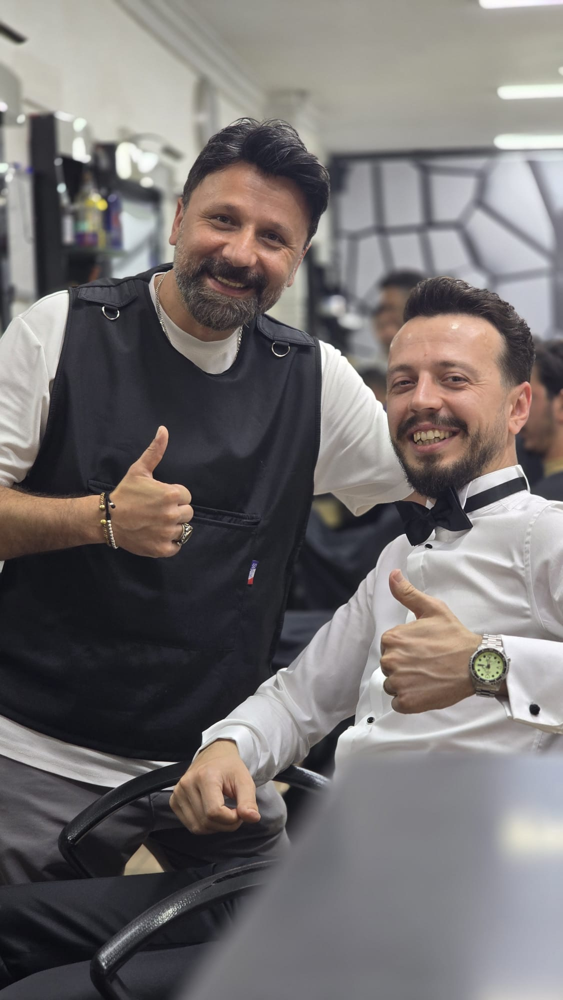
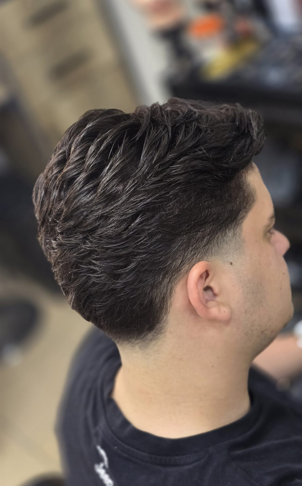
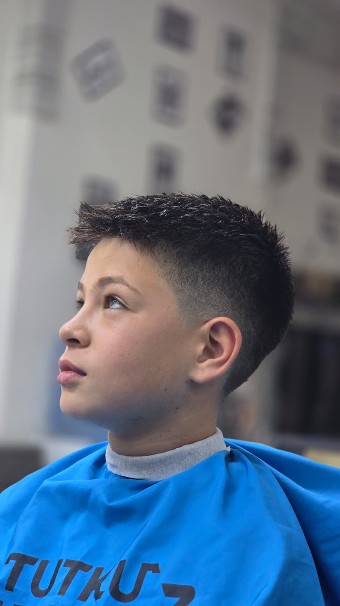
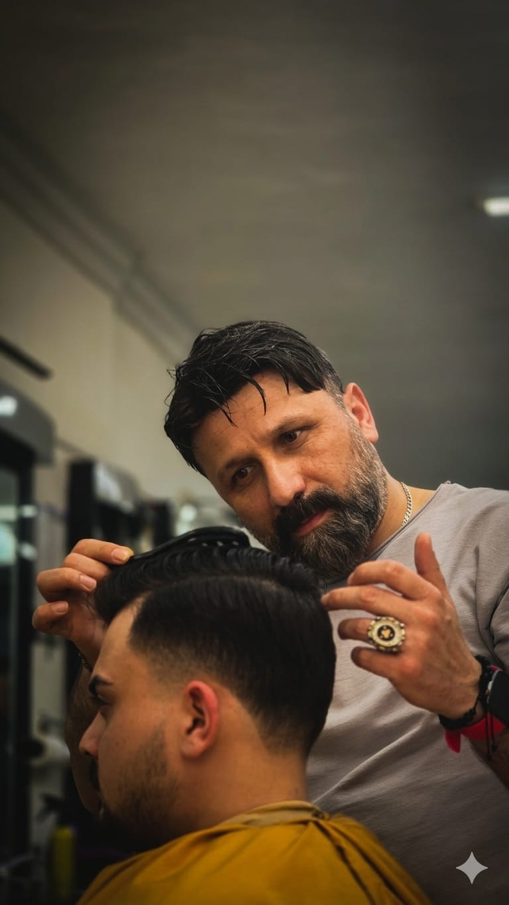
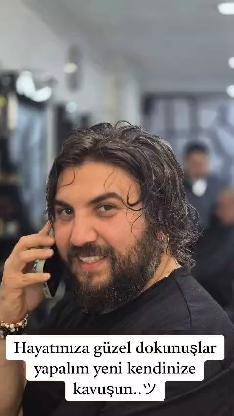
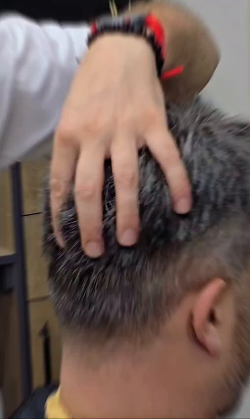
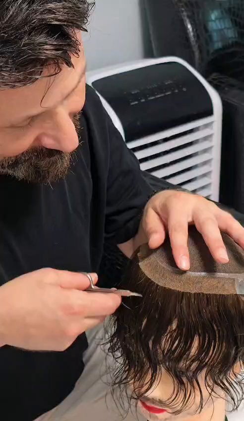
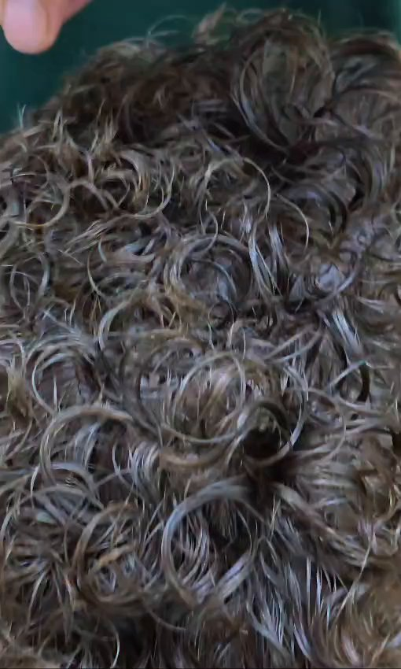

Dökülen ve seyrelen saçlarınıza ameliyatsız, acısız bir çözüm. Kişiye özel hazırlanan protez saç ile aynı gün içinde doğal ve gür bir görünüme kavuşun.
Berberlik zanaatına duyduğumuz tutkuyu protez saç uzmanlığıyla birleştiriyoruz. Kapımızdan girdiğiniz andan itibaren samimi bir karşılama, hijyenik bir ortam ve size özel bir dönüşüm sizi bekliyor.

Protez saç; saç dökülmesi ve kellik yaşayan beyler için cerrahi müdahale gerektirmeyen, aynı gün sonuç veren bir saçlandırma yöntemidir. Kafa yapınıza göre ölçülen ve gerçek insan saçından hazırlanan protez, kendi saçınızla uyumlu şekilde kesilip şekillendirilir.

Kişiye özel uygulama

Periyodik temizlik & yenileme

Yüz hattınıza uygun stil

Sakal tasarımı, cilt bakımı
Gerçek insan saçı ve ince tabanlı yapısı sayesinde kendi saçınızdan ayırt edilmesi çok zordur.
Aylarca beklemeden, uygulamanın yapıldığı gün yeni saçlarınızla salondan çıkarsınız.
Kesi, iğne veya iyileşme süreci yoktur. Uygulama tamamen cerrahi olmayan bir yöntemdir.
Protez saçınız istediğiniz modelde kesilir, taranır ve şekillendirilir.




Formu doldurun, randevu talebiniz WhatsApp üzerinden doğrudan bize ulaşsın.
Çay Mahallesi, 44. Sokak No: 13/C
Çarşamba / Samsun